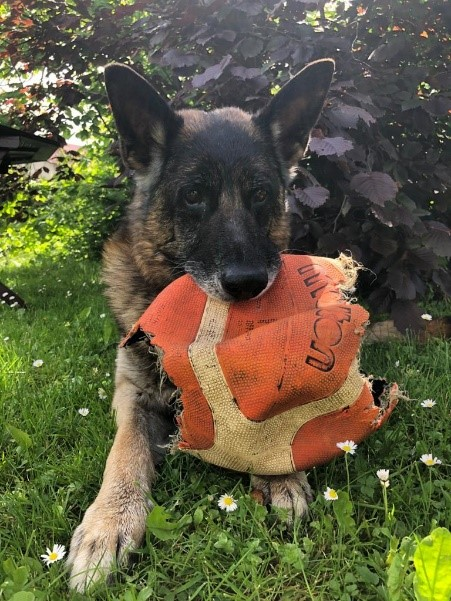

RADNI PSI
1. NJEMAČKI OVČARI - Nijedan drugi radni pas se ne može koristiti u toliko namjena kao njemački
ovčar. Danas se njemački ovčar koristi kao radni pas i pas čuvar u policiji, vojsci i na granicama, kao
spasilački i terapijski pas, u potragama kod lavina i pas vodič za slijepe osobe.


2. francuski buldog – terapijski pas
Životinje za emocionalnu potporu pružaju terapijske koristi određenim osobama s psihološkim
problemima poput anksioznosti, fobija ili posttraumatskog stresnog poremećaja. Jedna terapijska
pasmina je i francuski buldog idealan za manje stambene prostore.

3. LABRADOR RETRIVER
Service dogs su obučeni za obavljanje specifičnih i bitnih zadataka za svog vlasnika, poput otvaranja
vrata, podizanje predmeta za ljude u invalidskim kolicima, obavještavanje gluhih vlasnika o zvonima
na vratima, požarnim alarmima i drugim važnim zvukovima…

POVRATAK NA POČETNU STRANICU